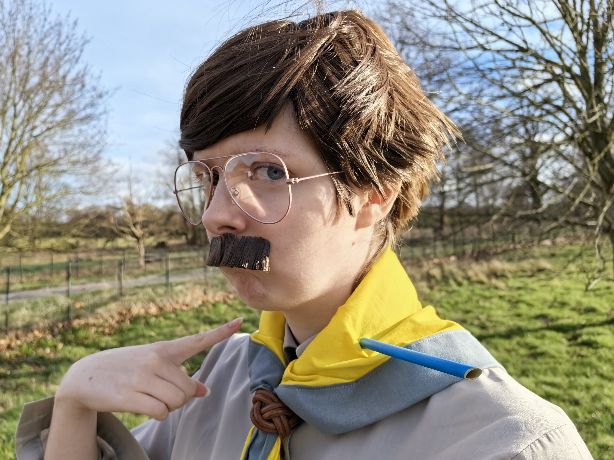
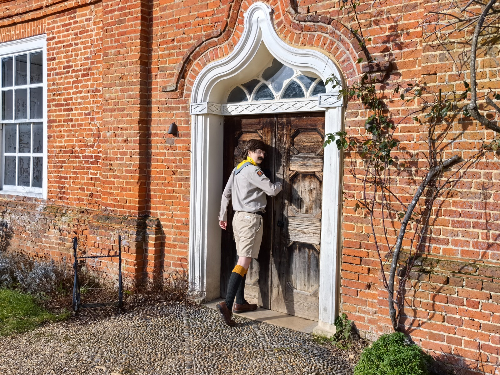
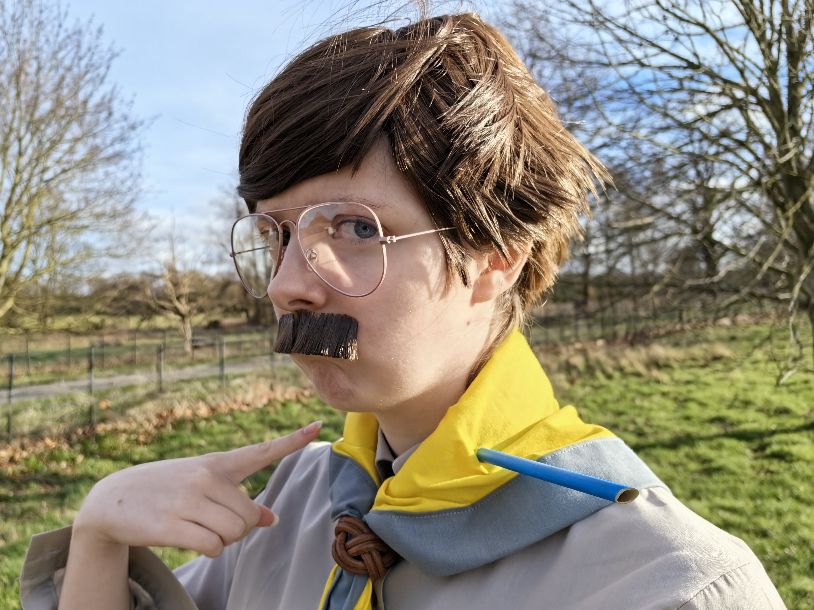
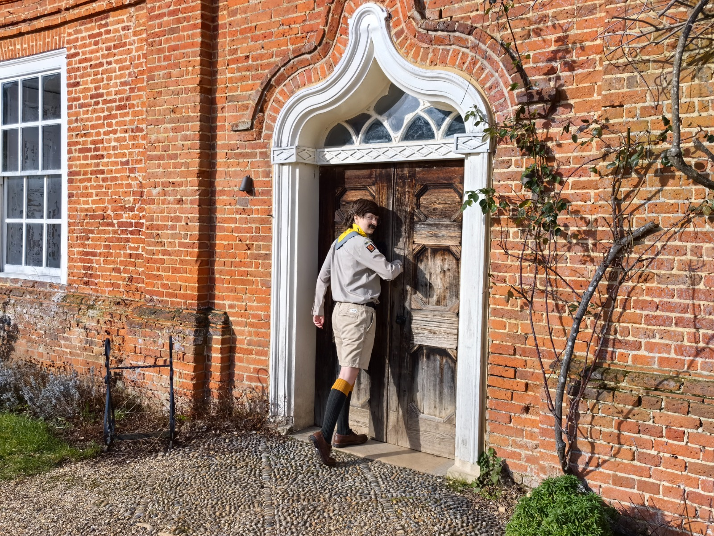

I fabricated this costume for my visit to the BBC ‘Ghosts’ filming location tour in West Horsley.


 



For this build I learnt how to make a fake mustache using wig hair glued to double-sided body tape. After sewing the scout scarf, I used thick EVA foam and a plastic stick, which I painted and modeled the ends to replicate the snapped end and the metal end, to replicate the arrow through my neck. To create the 2 tone-coloured socks, I first cut the foot part of the mustard sock off, leaving a tube that I sewed and added fray stop to keep it from fraying as I moved. With this tube, I can roll the sock in the long wool one to seem as though it was one sock. On a string of elastic, I sewed the kilt sock flags. The thrifted trousers are modified into shorts.